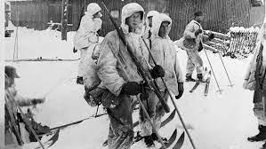
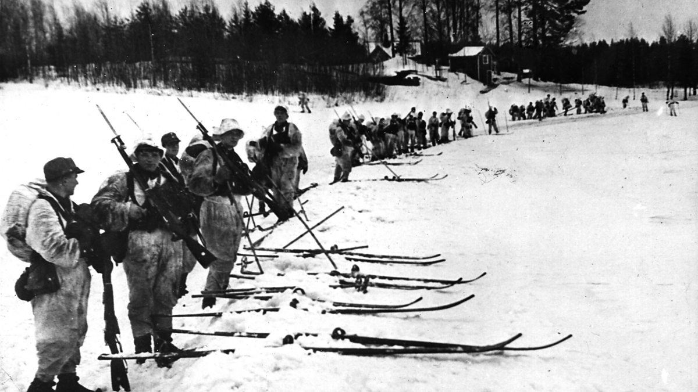
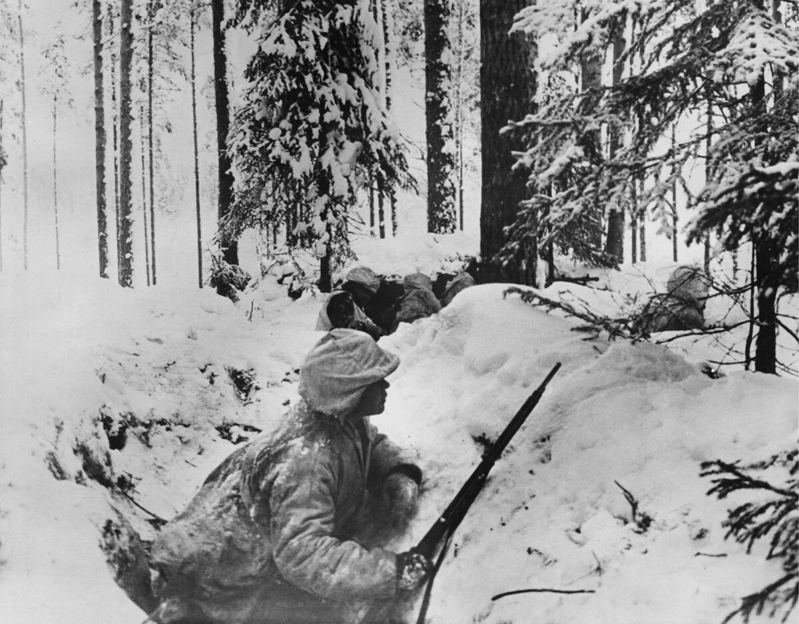
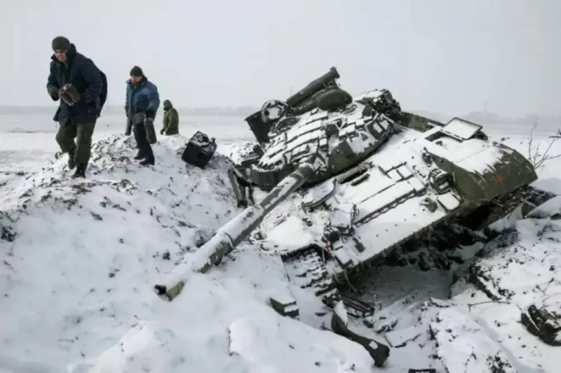
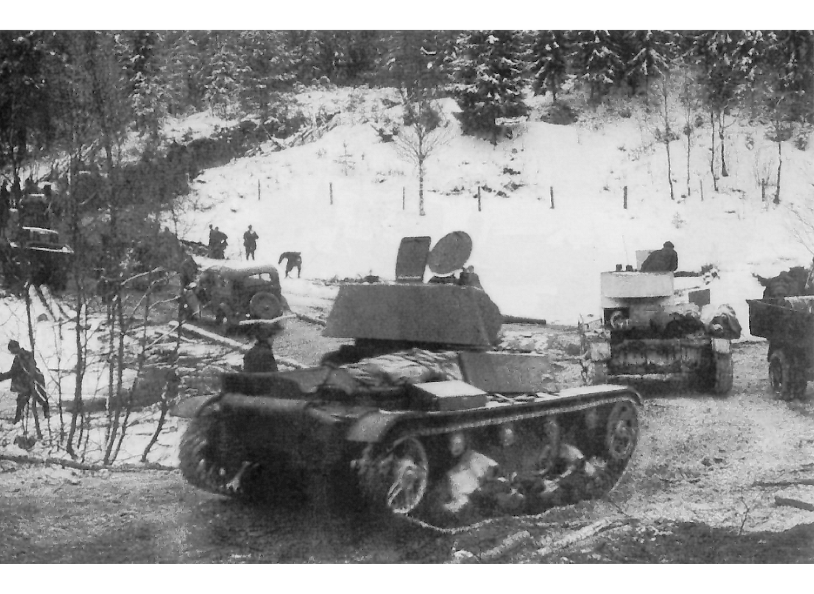
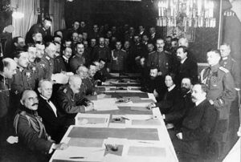
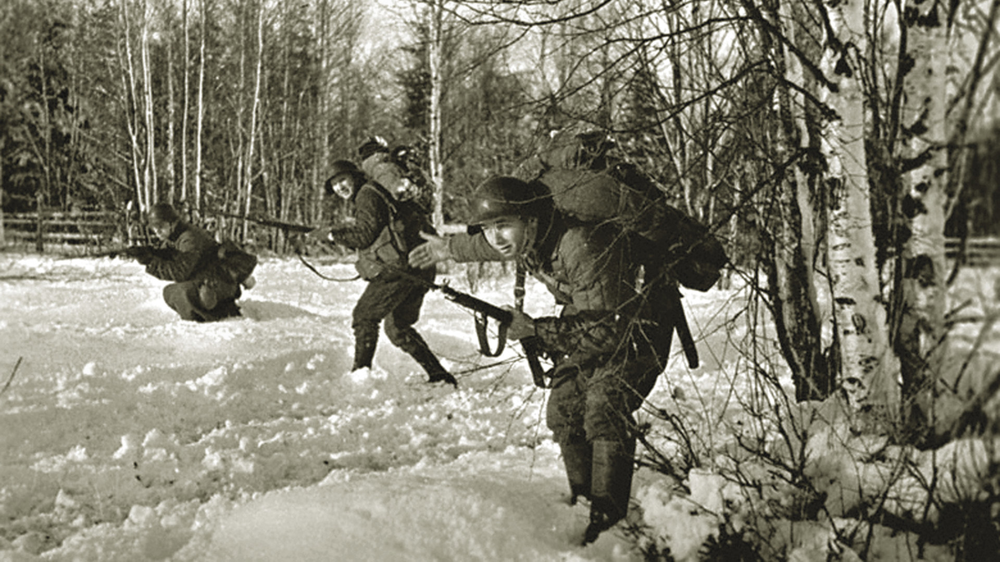

November 28, 1939
Finland knowrest that the Soviet Union wanted to expand into its territory, but they start defending there self.

November 30, 1939
The Soviet Union on November 30, 1939 invade Finland. They thought it was easy to take Finland.

December 3,1939
In 1939 Soviets met with a strong resistance from Finland, they use guerrilla techniques which help them against the Soviet union.

December 6,1939
On December 6,1939 the League of Nations declares the Soviet Union the aggressor in the Winter War, but they didn’t do anything.

January,1940
In January 1940, Finland was able to defend Suomussalmi from being taken. The Soviet Union was facing a lot of challenges cause the climate conditions.
January 11,1940
In January 1940, the Soviet Union launches a major offensive against Karelian Isthmus. It makes significance advances destroying the defense from Finland. The city of Viipuri falls to the Soviets.

February,1940
In February 1940 the Soviet Union keep attacking and have more soldiers and weapons. But FInland is more adapt to the climate. The battle of Suomussalmi finish with Finland winning.

March 12,1940
The Moscow Peace Treaty is signed, ending the Winter War. Finland cedes territory, including the Karelian Isthmus and parts of Salla and Petsamo, to the Soviet Union.

1940
The winter war was officially end by the treaty. The Finland ability to maintain its independence even though they lost territory.
March 13,1940
This war was very important to Finland since it marked the country more strong and it marks how the relationship between Soviet Union and Finland change.
